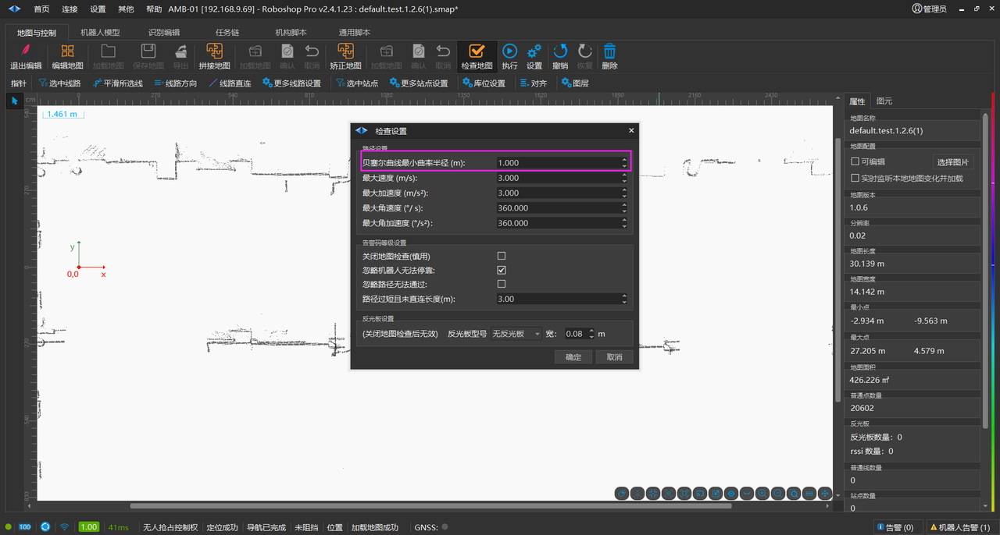
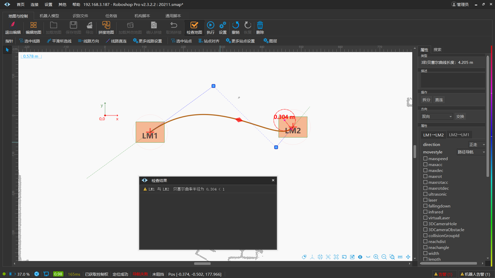

Roboshop 使用手册
Wiki table of contents
Wiki table of contents
发布说明（软件下载）
第一章：关于本手册
第二章：安装环境要求
第三章：首页
机器人
连接机器人
地图与控制
启用编辑
地图编辑
指针
橡皮擦
高级线
站点
路径
高级区域
二维码
库位
坐标变换
关联线
地图编辑注意事项
杂点擦除
厚墙擦薄
曲线直连
站点外接圆
孤立站点
曲率
站点方向
拼接地图
矫正地图
检查地图
运动和控制
地图管理
参数配置
重定位
运行状态
IO 配置
其他
任务链
模型文件
识别编辑
机构脚本
通用脚本
调度服务器
视觉服务器
自研叉车充电桩
RTK基站
PGV
高级配置
第四章：设置
第五章：其他
附录 A - 属性说明
附录 B - 其他实施方法
Robod(守护程序)
问题分析
注意事项
版权声明
header-v2
SEER Robotics
曲率
Last updated: May 07
Log In or Sign Up
曲率
曲率
曲率
Modified May 7, 2024
曲率
对于无法原地旋转（旋转半径不为 0）的机器人，可以使用曲率半径检查，以使线路绘制的更加合理。

上图中设置了曲率半径检测值为 1.0m，当检测到曲线的曲率
小于 1.0m
时，就会有
警告
。如下图，检测到曲率只有 0.315m。

Comments (0)
Go to the first comment
0 words
Help Center
Keyboard Shortcuts